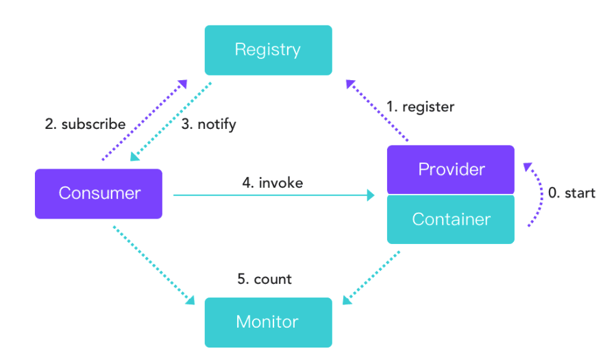
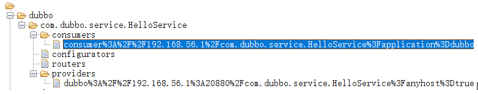
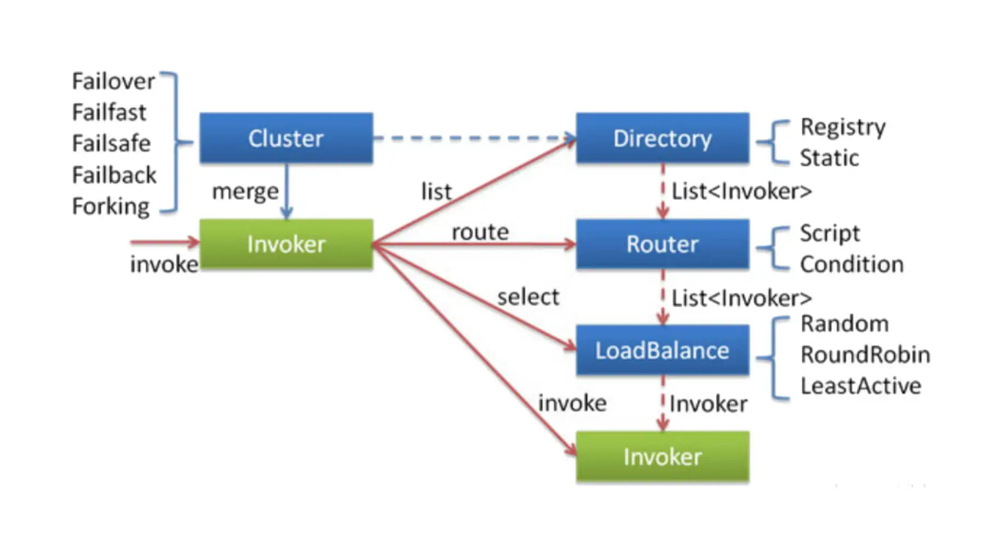
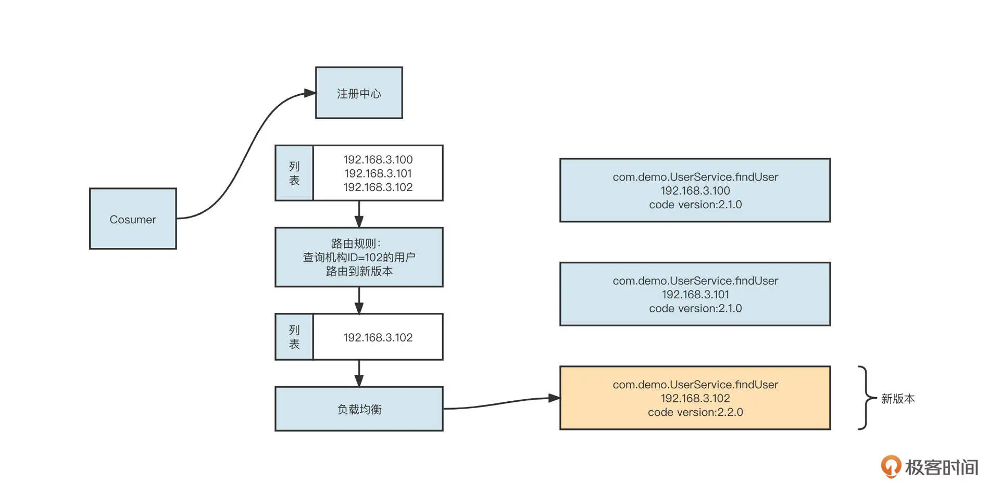
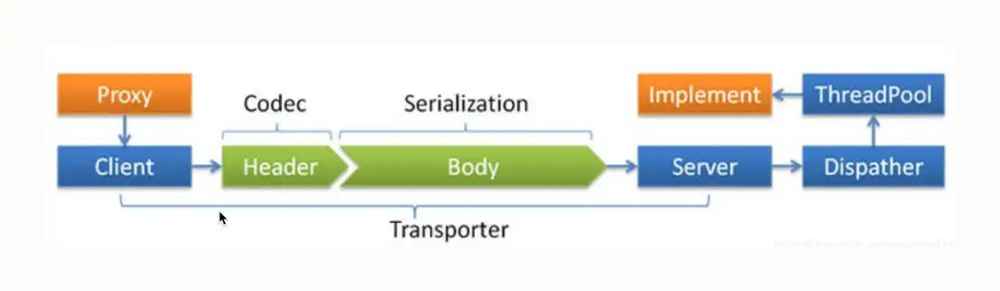
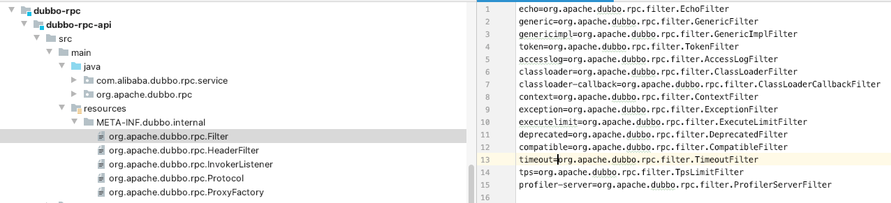
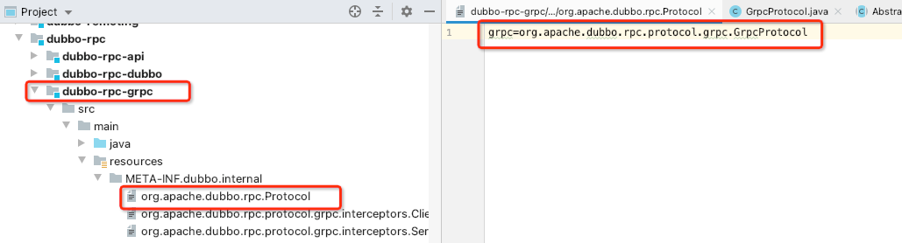
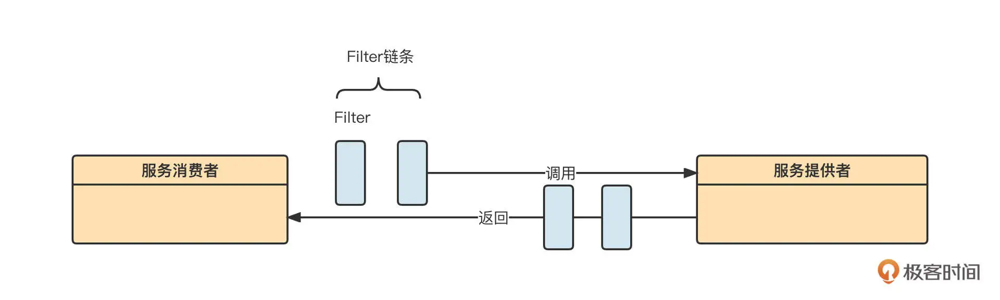
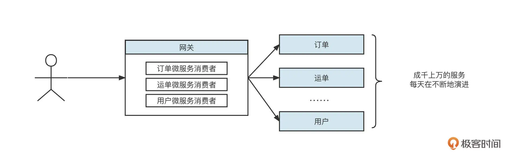
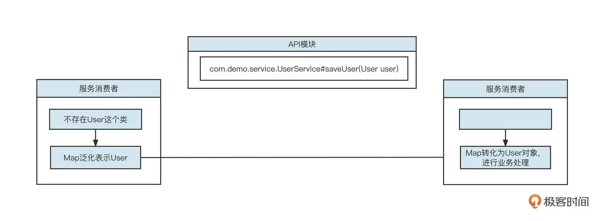

- 00 开篇词 为什么中间件对分布式架构体系来说这么重要？.md
- 01 中间件生态（上）：有哪些类型的中间件？.md
- 02 中间件生态（下）：同类型的中间件如何进行选型？.md
- 03 数组与链表：存储设计的基石有哪些？.md
- 04 红黑树：图解红黑树的构造过程与应用场景.md
- 05 多线程：多线程编程有哪些常见的设计模式？.md
- 06 锁：如何理解锁的同步阻塞队列与条件队列？.md
- 07 NIO：手撸一个简易的主从多Reactor线程模型.md
- 08 Netty：如何优雅地处理网络读写，制定网络通信协议？.md
- 08 加餐 中间件底层的通用设计理念.md
- 09 技术选型：如何选择微服务框架和注册中心？.md
- 10 设计原理：Dubbo核心设计原理剖析.md
- 11 案例：如何基于Dubbo进行网关设计？.md
- 12 案例：如何实现蓝绿发布？.md
- 13 技术选型：如何根据应用场景选择合适的消息中间件？.md
- 14 性能之道：RocketMQ与Kafka高性能设计对比.md
- 15 案例：消息中间件如何实现蓝绿？.md
- 16 案例：如何提升RocketMQ顺序消费性能？.md
- 17 运维：如何运维日均亿级的消息集群？.md
- 18 案例：如何排查RocketMQ消息发送超时故障？.md
- 19 案例：如何排查RocketMQ消息消费积压问题？.md
- 20 技术选型：分布式定时调度框架的功能和未来.md
- 21 设计理念：如何基于ZooKeeper设计准实时架构？.md
- 22 案例：使用分布式调度框架该考虑哪些问题？.md
- 23 案例：如何在生产环境进行全链路压测？.md
- 大咖助阵 高楼：我们应该如何学习中间件？.md
- 用户故事 学而时习之，不亦乐乎.md
- 用户故事 愿做技术的追梦人.md
- 用户故事 浪费时间也是为了珍惜时间.md
- 结束语 坚持不懈，越努力越幸运.md
10 设计原理：Dubbo核心设计原理剖析
你好，我是丁威。
这节课，我们来剖析一下 Dubbo 中一些重要的设计理念。这些设计理念非常重要，在接下来的 11 和 12 讲 Dubbo 案例中也都会用到，所以希望你能跟上我的节奏，好好吸收这些知识。
微服务架构体系包含的技术要点很多，我们这节课没法覆盖 Dubbo 的所有设计理念，但我会带着你梳理 Dubbo 设计理念的整体脉络，把生产实践过程中会频繁用到的底层原理讲透，让你轻松驾驭 Dubbo 微服务。
我们这节课的主要内容包括服务注册与动态发现、服务调用、网络通信模型、高度灵活的扩展机制和泛化调用五个部分。
服务注册与动态发现
我们首先来看一下 Dubbo 的服务注册与动态发现机制。
Dubbo 的服务注册与发现机制如下图所示：

Dubbo 中主要包括四类角色，它们分别是注册中心（Registry）、服务调用者 & 消费端（Consumer）、服务提供者（Provider）和监控中心（Monitor）。
在实现服务注册与发现时，有三个要点。
服务提供者 (Provider) 在启动的时候在注册中心 (Register) 注册服务，注册中心 (Registry) 会存储服务提供者的相关信息。
服务调用者 (Consumer) 在启动的时候向注册中心订阅指定服务，注册中心将以某种机制（推或拉）告知消费端服务提供者列表。
当服务提供者数量变化（服务提供者扩容、缩容、宕机等因素）时，注册中心需要以某种方式 (推或拉) 告知消费端，以便消费端进行正常的负载均衡。
Dubbo 官方提供了多种注册中心，我们选择使用最为普遍的 ZooKeeper 进一步理解注册中心的原理。
我们先来看一下 Zookeeper 注册中心中的数据存储目录结构。

可以看到，它的目录组织结构为 /dubbo/{ServiceName}，其中，ServiceName 表示一个具体的服务，通常用包名 + 类名表示，在每一个服务名下又会创建四个目录，它们分别是：
providers，服务提供者列表；
consumers，消费者列表；
routers，路由规则列表（一个服务可以设置多个路由规则）；
configurators，动态配置条目。
要说明的是，在 Dubbo 中，我们可以在不重启消费者、服务提供者的前提下动态修改服务提供者、服务消费者的配置，配置信息发生变化后会存储在 configurators 子节点中。此时，服务提供者、消费者会动态监听配置信息的变化，变化一旦发生就使用最新的配置重构服务提供者和服务消费者。
基于 Zookeeper 注册中心的服务注册与发现有下面三个实现细节。
服务提供者启动时会向注册中心进行注册，具体是在对应服务的 providers 目录下增加一条记录（临时节点），记录服务提供者的 IP、端口等信息。同时服务提供者会监听 configurators 节点的变化。
服务消费者在启动时会向注册中心订阅服务，具体是在对应服务的 consumers 目录下增加一条记录（临时节点），记录消费者的 IP、端口等信息，同时监听 configurators、routers 目录的变化，所谓的监听就是利用 ZooKeeper 提供的 watch 机制。
当有新的服务提供者上线后， providers 目录会增加一条记录，注册中心会将最新的服务提供者列表推送给服务调用方（消费端），这样消费者可以立刻收到通知，知道服务提供者的列表产生了变化。如果一个服务提供者宕机，因为它是临时节点，所以 ZooKeeper 会把这个节点移除，同样会触发事件，消费端一样能得知最新的服务提供者列表，从而实现路由的动态注册与发现。
服务调用
接下来我们再来看看服务调用。Dubbo 的服务调用设计十分优雅，其实现原理图如下：

服务调用重点阐述的是客户端发起一个 RPC 服务调用时的所有实现细节，它包括服务发现、故障转移、路由转发、负载均衡等方面，是 Dubbo 实现灰度发布、多环境隔离的理论指导。
刚才，我们已经就服务发现做了详细介绍，接下来我们重点关注负载均衡、路由、故障转移这几个方面。
客户端通过服务发现机制，能动态发现当前存活的服务提供者列表，接下来要考虑的就是如何从服务提供者列表中选择一个服务提供者发起调用，这就是所谓的负载均衡（LoadBalance）。
Dubbo 默认提供了随机、加权随机、最少活跃连接、一致性 Hash 等负载均衡算法。
值得注意的是，Dubbo 不仅提供了负载均衡机制，还提供了智能路由机制，这是实现 Dubbo 灰度发布的重要理论基础。
所谓路由机制，是指设置一定的规则对服务提供者列表进行过滤。负载均衡时，只在经过了路由机制的服务提供者列表中进行选择。为了更好地理解路由机制的工作原理，你可以看看下面这张示意图：

我们为查找用户信息服务设置了一条路由规则，即“查询机构 ID 为 102 的查询用户请求信息将被发送到新版本（192.168.3.102）上。具体的做法是，在进行负载均衡之前先执行路由选择，按照路由规则对原始的服务提供者列表进行过滤，从中挑选出符合要求的提供者列表，然后再进行负载均衡。
接下来，客户端就要向服务提供者发起 RPC 请求调用了。远程服务调用通常涉及到网络等因素，因此并不能保证 100% 成功，当调用失败时应该采用什么策略呢？
Dubbo 提供了下面五种策略：
failover，失败后选择另外一台服务提供者进行重试，重试次数可配置，通常适合实现幂等服务的场景；
failfast，快速失败，失败后立即返回错误；
failsafe，调用失败后打印错误日志，返回成功，通常用于记录审计日志等场景；
failback，调用失败后，返回成功，但会在后台定时无限次重试，重启后不再重试；
forking，并发调用，收到第一个响应结果后返回给客户端。通常适合实时性要求比较高的场景。但这一策略浪费服务器资源，通常可以通过 forks 参数设置并发调用度。
如果将服务调用落到底层，就不得不说说网络通信模型了，这部分包含了很多性能调优手段。
网络通信模型
我们先看看 Dubbo 的网络通信模型，如下图所示：

Dubbo 的网络通信模型主要包括网络通信协议和线程派发机制（Dispatcher）两部分。
网络传输通常需要自定义通信协议，我们常用的协议设计方式是 Header + Body, 其中 Header 长度固定，包含一个长度字段，用于记录整个协议包的大小。
同时，为了提高传输效率，我们一般会对传输数据也就是 Body 的内容进行序列化与压缩处理。
Dubbo 支持目前支持 java、compactedjava、nativejava、fastjson、fst、hessian2、kryo 等序列化协议，生产环境默认为 hessian2。
网络通信模型的另一部分是线程派发机制。Dubbo 中会默认创建 200 个线程处理业务，这时候就需要线程派发机制来指导 IO 线程与业务线程如何分工。
Dubbo 提供了下面几种线程派发机制：
all，所有的请求转发到业务线程池中执行（IO 读写、心跳包除外，因为在 Dubbo 中这两种请求都必须在 IO 线程中执行，不能通过配置修改）；
message，只有请求事件在线程池中执行，其他请求在 IO 线程上执行；
connection ，求事件在线程池中执行，连接和断开连接的事件排队执行（含一个线程的线程池）；
direct，所有请求直接在 IO 线程中执行。
为什么线程派发机制有这么多种策略呢？其实这主要是考虑到线程切换带来的开销问题。也就是说，我们希望通过多种策略让线程切换带来的开销小于多线程处理带来的提升。
我举个例子，Dubbo 中的心跳包都必须在 IO 线程中执行。在处理心跳包时，我们只需直接返回 PONG 包（OK）就可以了，逻辑非常简单，处理速度也很快。如果将心跳包转换到业务线程池，性能不升反降，因为切换线程会带来额外的性能损耗，得不偿失。
网络编程中需要遵循一条最佳实践：IO 线程中不能有阻塞操作，通常将阻塞操作转发到业务线程池异步执行。
与网络通信协议相关的参数定义在 dubbo:protocol，关键的设置属性如下。
threads，业务线程池线程个数，默认为 200。
queues，业务线程池队列长度，默认为 0，表示不支持排队，如果线程池满，则直接拒绝。该参数与 threads 配合使用，主要是对服务端进行限流，一旦超过其处理能力，就拒绝请求，快速失败，引导客户端重试。
iothreads：默认为 CPU 核数再加一，用于处理网络读写。在生产实践中，通常的瓶颈在于业务线程池，如果业务线程无明显瓶颈（jstack 日志查询到业务线程基本没怎么干活），但吞吐量已经无法继续提升了，可以考虑调整 iothreads，增加 IO 线程数量，提高 IO 读写并发度。该值建议保持在“2*CPU 核数”以下。
serialization：序列化协议，新版本支持 protobuf 等高性能序列化机制。
dispatcher：线程派发机制，默认为 all。
高度灵活的扩展机制
Dubbo 出现之后迅速成为微服务领域最受欢迎的框架，除操作简单这个原因外，还有扩展机制的功劳。Dubbo 高度灵活的扩展机制堪称“王者级别的设计”。
Dubbo 的扩展设计主要是基于 SPI 设计理念，我们来看下具体的实现方案。
Dubbo 所有的底层能力都通过接口来定义。用户在扩展时只需要实现对应的接口，定义一个统一的扩展目录（META-INF.dubbo.internal）存放所有的扩展定义即可。要注意的是，目录下的文件名是需要扩展的接口的全名，像下图这样：

在初次使用对应接口实例时，可以扫描扩展目录中的文件，并根据文件中存储的 key-value 初始化具体的实例。
我们以 RPC 模块为例看一下 Dubbo 强悍的扩展能力。众所周知，目前 gRPC 协议以优异的性能表现正在逐步成为 RPC 领域的王者，很多人误以为 gRPC 是来革 Dubbo 的“命”的。其实不然，我们可以认为 Dubbo 是微服务体系的完整解决方案，而 RPC 只是微服务体系中的重要一环，Dubbo 完全可以吸收 gRPC，让 gRPC 成为 Dubbo 的远程调用方式。
具体的做法只需要在 dubbo-rpc 模块中添加一个 dubbo-rpc-grpc 模块，然后使用 gRPC 实现 org.apache.dubbo.rpc.protocol 接口，并将其配置在扩展目录中：

面对 gRPC 这么强大的功能扩展机制，绝大部分人应该和我一样，都是作为中间件的应用人员，不需要使用模块级别的扩展机制。我们通常只是结合应用场景来进行功能扩展。
Dubbo 在业务功能级别的扩展可以通过 Filter 机制来实现。Filter 的工作机制如下：

这里，过滤器链的执行时机是在服务消费者发起远程 RPC 请求之前。最先执行的是消费端的过滤器链，每一个过滤器可以设置执行顺序。服务端在解码之后、执行业务逻辑之前，也会首先调用过滤器链。
在专栏的最后一讲，我还会通过一个全链路压测方案讲解如何利用 Filter 机制来解决实际问题。
泛化调用
在这节课的最后，我们再来介绍一下 Dubbo 的泛化调用机制，它也是实现 Dubbo 网关的理论基础。
我们在开发 Dubbo 应用时通常会包含 API、Consumer、Provider 三个子模块。
其中 API 模块通常定义统一的服务接口，而 Consumer、Provider 模块都需要显示依赖 API 模块。这种设计理念虽然将 Provider 与 Consumer 进行了解耦合，但对 API 模块形成了强依赖，如果 API 模块发生改变，Provider 和 Consumer 必须同时改变。也就是说，一旦 API 模块发生变化，服务调用方、服务消费方都需要重新部署，这对应用发布来说非常不友好。特别是在网关领域，几乎是不可接受的，如下图所示：

公司的微服务在不停地演进，如果网关需要跟着 API 模块不停地发布新版本，网关的可用性和稳定性都将受到极大挑战。怎么解决这个问题呢？
这就要说到 Dubbo 的机制了。泛化调用具体实现原理如下：

当服务消费端发生调用时，我们使用 Map 来存储一个具体的请求参数对象，然后传输到服务提供方。由于服务提供方引入了模型相关的 Jar，服务提供方在执行业务方法之前，需要将 Map 转化成具体的模型对象，然后再执行业务逻辑。
Dubbo 的泛化调用在服务提供方的转化是通过 Filter 机制统一处理的，服务端并不需要关注消费方采取何种方式进行调用。
通过泛化调用机制，客户端不再需要依赖服务端的 Jar 包，服务端可以不断地演变，而不会影响客户端已有服务的运行。
总结
好了，这节课就讲到这里。我们这节课主要介绍了 Dubbo 的服务注册与发现、服务调用、网络通信模型、扩展机制还有泛化调用等核心工作机制，了解这些内容可以指导我们更好实践微服务。
另外，Dubbo 框架算是阿里巴巴开源的所有框架中文档最为齐全的框架了，非常值得我们深入学习与研究。如果你想要进一步掌握 Dubbo，建议你看看Dubbo 官方文档。
课后题
我们将在下节课和你一起聊聊 Dubbo 的网关设计方案，其中泛化调用是其理论设计基础，所以我们的第一道课后题就是，请你试着先编写一个 Dubbo 泛化调用的示例。
提示一下，Dubbo 提供了 dubbo-demo 模块，你可以在官方提供的示例中进行泛化调用编写，节省搭建基础项目的时间。
请你尝试通过 dubbo-admin 运维管理工具动态修改参数，看看它是否可以动态生效。你知道它背后是如何实现的么？
欢迎你在留言区与我交流讨论，我们下节课再见！
© 2019 - 2023 Liangliang Lee. Powered by gin and hexo-theme-book.